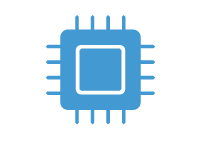
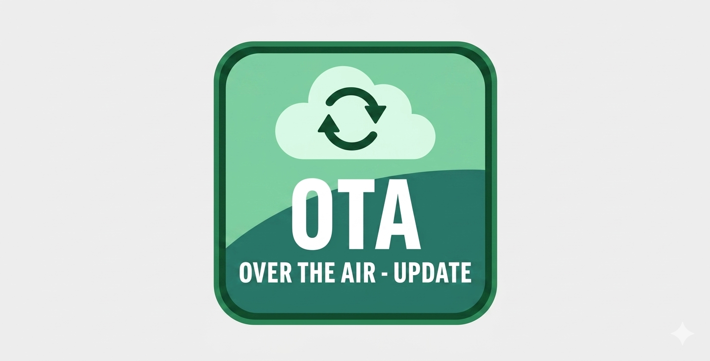
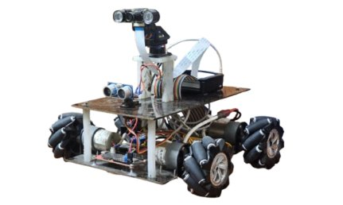
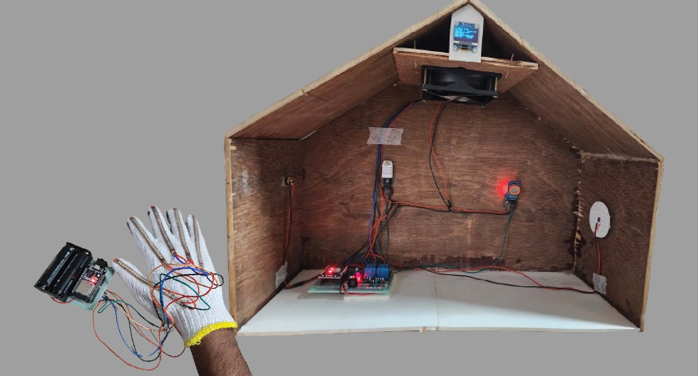
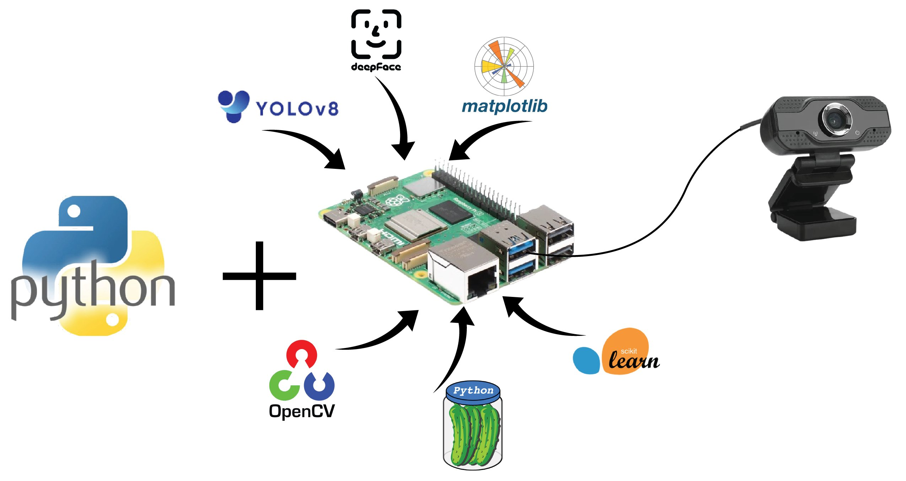
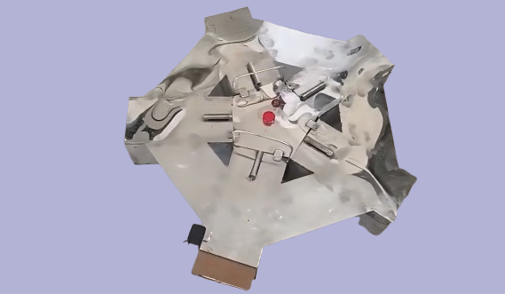

It's the Firmware for our first product developed by RayTrace Labs.

This process enables the Over The Air(OTA) Firmware update feature for any type of STM32 driven system. The system will be able to detect any corruption to its firmware and reset by itself.

A mobile robot with Omnidirectional Mobility, UWB Based Localization, Face & Object Detection capability, Autonomous Surveillance as well as Manual & Voice Control Mode, Live Video Feed Cabability and at last it has wireless charging feature enabled.

The IoT system was a prototype for persons with limited hand mobility to control his room peripherals using finger movement. The system also provides a mobile application which will give the current environmental condition of the room and will alarm for any emergency.

The system is able to detect object, face and facial expression. It works with multiple datasets at a time inside cutting edge devices like Raspberry Pi.

The project was made for BRRI, Mymensingh. Its the modified version of traditional rat trap able to catch 5 rats at a time in 5 different chembers. By the time it kills the rats with high voltage electric shock.